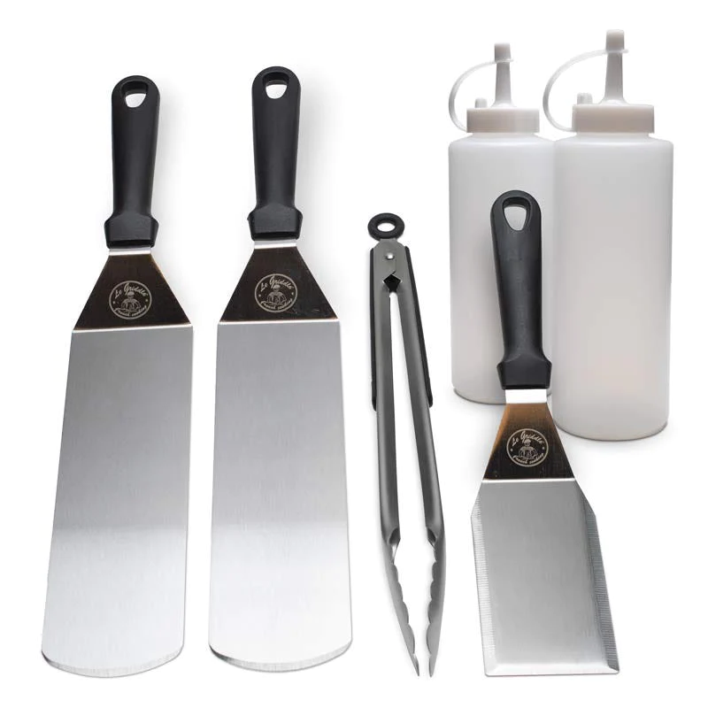
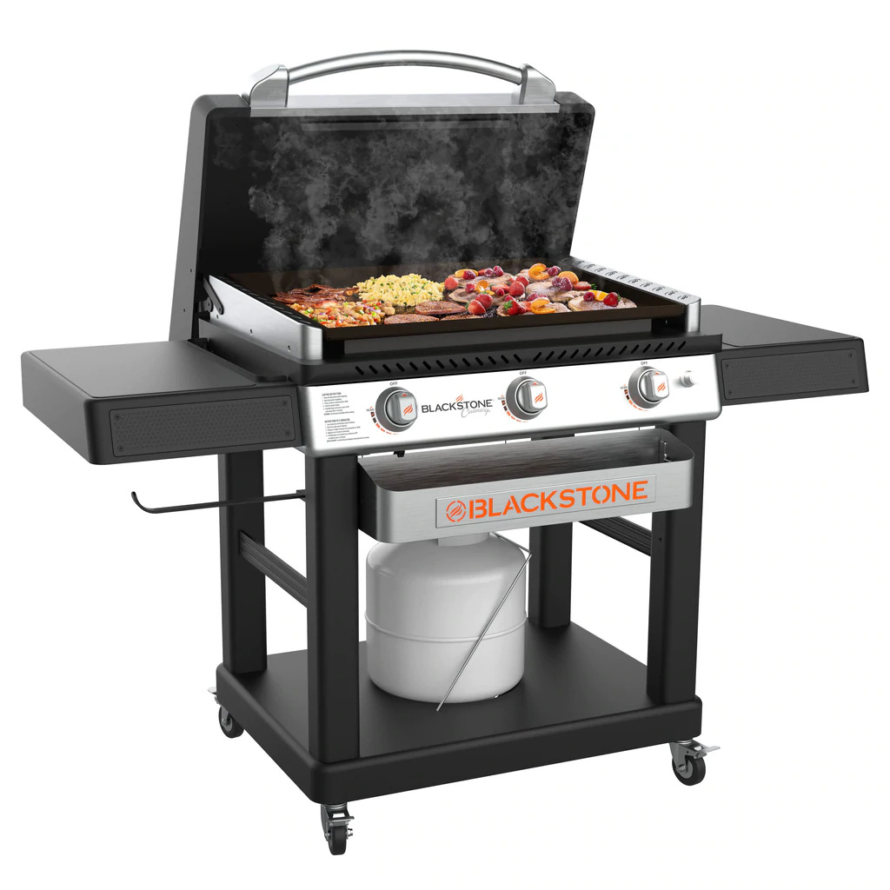
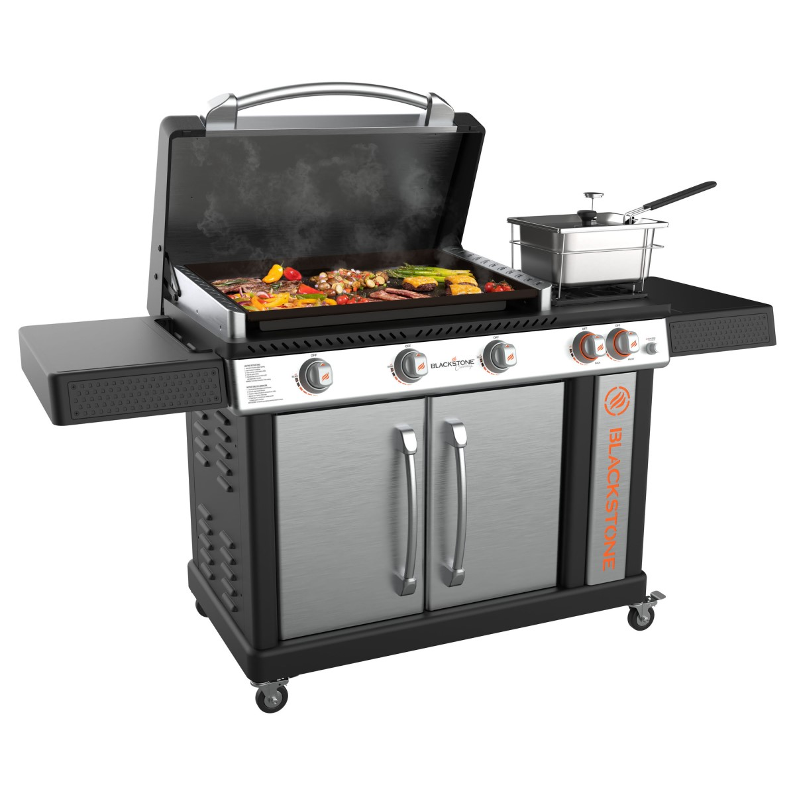
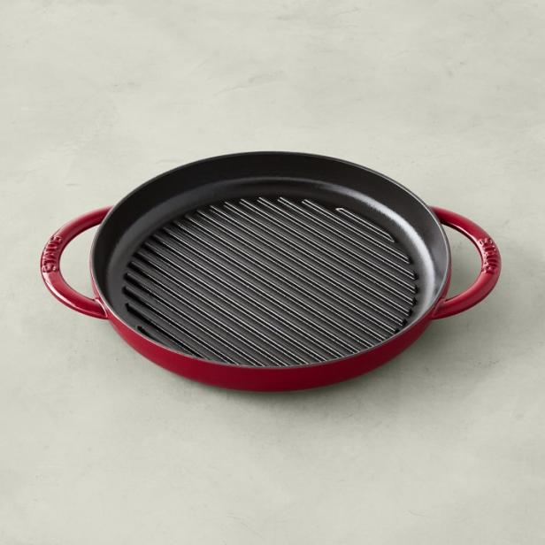
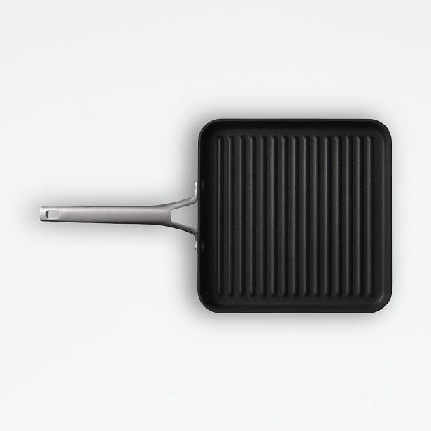

Products of the week
#1
LE GRIDDLE

- Le Griddle is a premium outdoor grilling product with a patented Dual Plate System and lifetime warranty
- It is made of stainless steel 304 and cast iron to prevent discoloration and ensure a perfect grilling experience
- Available in 3 different sizes and can be accessedorized with lids, covers, and starter kit
- The cooking plate has perfect heat distribution on the whole surface for efficient cooking.
#2
STARTER KIT

- Set of six.
- Le Griddle Accessories Starter Kit has everything you need to start cooking on the griddle.
- Includes a water bottle, an oil bottle, two cooking spatulas, a pair of tongs and a cleaning spatula.
#3
28″ XL W/HOOD & FRONT SHELF

- The Cart has three independently controlled cooking zones and can pump out 48,000 BTUs, making it a convenient and durable option for creating any dish.
- Classic 28” Griddle with a Culinary Style Front Utility Tray, dual side shelves, and a Stainless Culinary Styled Hood.
#4
PATIO COLLECTION 28″ GRIDDLE WITH AIR FRYER

- The air fryer griddle is a popoar choice due to its versatility in cooking various foods and frying vegetables.
- The griddle comes with accessories to make it even more impressive and capable of cooking memorable meals.
#5
STAUB ENABLED CAST IRON PURE GRILL

- The enameled cast iron pan is heavy but not awkward to transport from stove to oven
- It is oven safe up to 500 degrees F and can be used on various cooktops
- The round handles are comfortable to grip but get extremely hot, so silicone mitts are recommended
- Cleaning off anything that sticks is pretty easy and the pan has 1½-inch-high sides and lots of grilling surface area
- Calphalon says this pan is nonstick quality lasts 40% longer than its own Classic pans and offers a lifetime warranty.
#6
CALPHALON PREMIER NON-STICK 11" SQUARE GRILL PAN

- Easy cleanup
- Grill pan is tough, sturdy, and has a comfortable-to-grip, long handle
- It has 1½-inch-high sides and lots of grilling surface area, and is oven safe up to 450 degrees F
- The pan lasts 40% longer than its own Classic pans and comes with a lifetime warranty